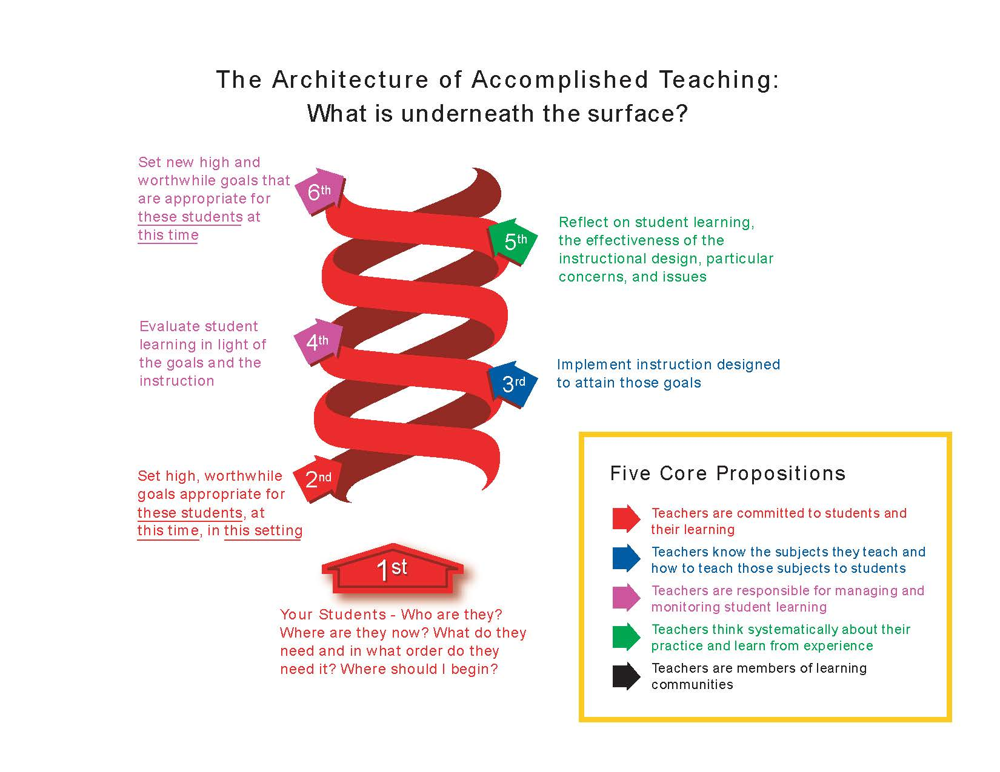

Five Core Propositions
Explore what teachers should know and be able to do, and use the propositions to guide reflection.
Read the Five Core PropositionsBoston National Board Program
Bring the principles of National Board Certification into your classroom, school, and professional learning community.
Explore what teachers should know and be able to do, and use the propositions to guide reflection.
Read the Five Core PropositionsExplore accomplished practice within specific subject areas and developmental levels.
Explore the standardsStudy authentic classroom cases and discuss teaching practice with colleagues.
Explore ATLASFind conversation frameworks, reflection questions, study bundles, and leadership toolkits.
Browse teaching practice resourcesA framework for connecting what you know about your students with goals, instruction, assessment, and reflection.

Open the full-size teaching framework
Connect with the National Board Leadership Team to find the right next step for you.